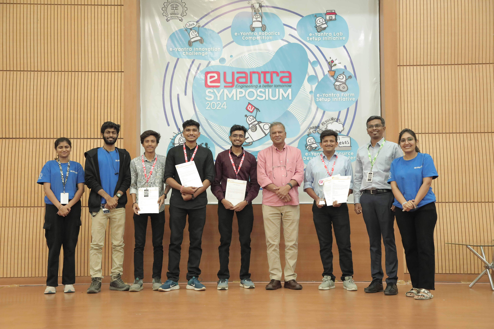
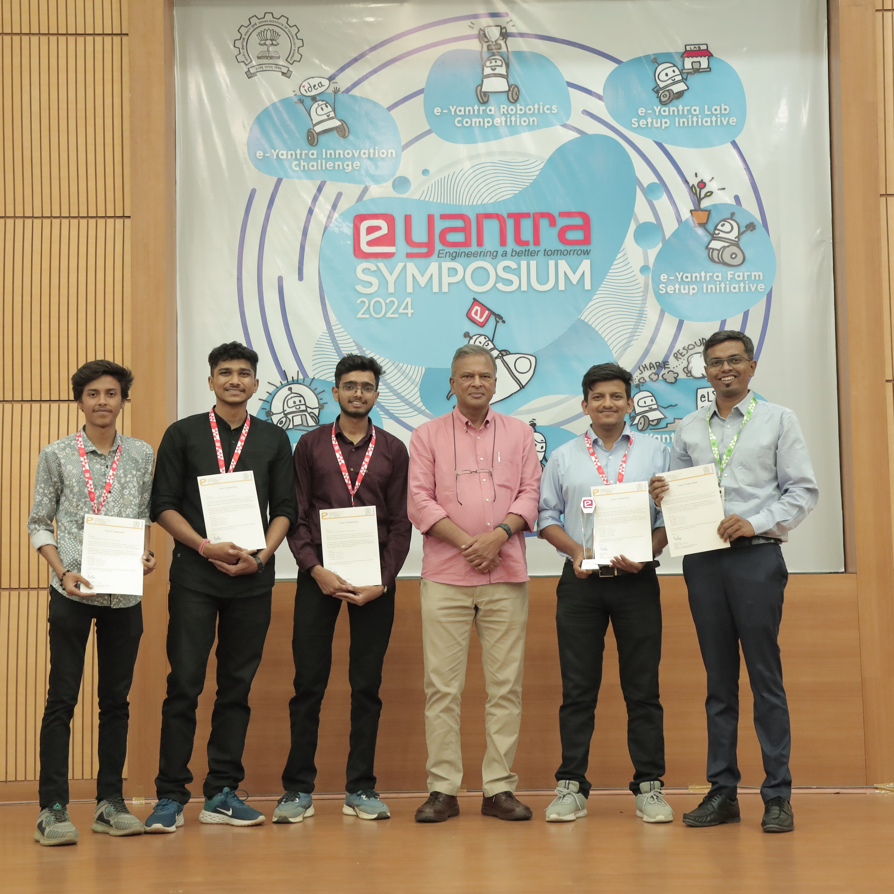
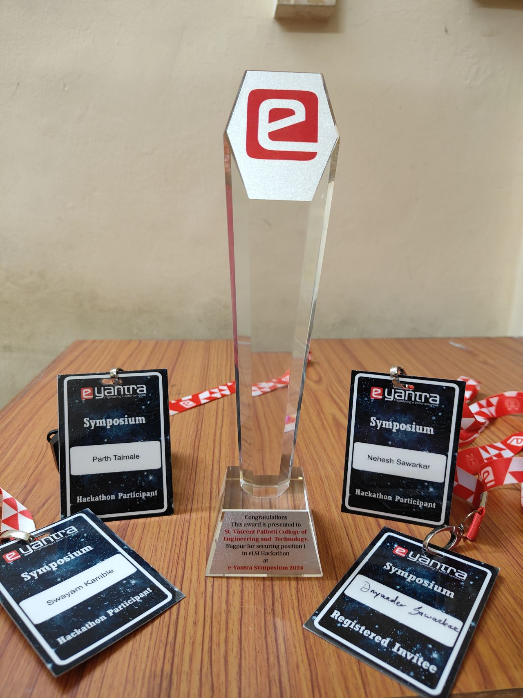

Introduction
The e-Yantra Lab Automation System is an AI and IoT-based smart automation solution developed for the eLSI Hackathon organized by e-Yantra, IIT Bombay. Created under the theme "Automate Your e-Yantra Lab", the system aims to modernize traditional lab environments by introducing intelligent control, energy efficiency, and secure access mechanisms. Competing against more than 520 colleges across India, our team secured 1st place, earning national-level recognition for innovation in smart infrastructure and embedded systems.
Project Motivation
Technical laboratories in educational institutions often suffer from excessive energy usage due to unattended equipment and lack of centralized control. Moreover, ensuring security and tracking attendance can be challenging in open-access environments. This project addresses those challenges by building a fully automated lab using real-time computer vision, secure authentication systems, and multi-platform IoT control. The goal was to design a lab that responds intelligently to human presence and access needs while reducing manual intervention and energy consumption.
System Overview
At the heart of the system is a vision-based automation mechanism powered by OpenCV. A ceiling-mounted wide-angle camera constantly monitors the lab and identifies which zones are occupied. Based on the presence of individuals, the system automatically turns lights and fans ON or OFF using ESP32 microcontrollers and relay modules. This ensures appliances operate only when necessary, significantly reducing power wastage.
The system also integrates a facial recognition module for access control. Only registered users can unlock the smart door—either through face recognition or using a secure mobile PIN. This dual-layer security mechanism makes the lab both smart and secure.
Key Features
- Smart Energy Management: Vision-based system automatically controls lights and fans based on occupancy detection, reducing energy waste.
- Dual-Layer Security: Facial recognition and mobile PIN authentication for secure lab access.
- Multiple Control Interfaces: Custom Android app, Node-RED dashboard, Google Assistant, and Amazon Alexa integration.
- Attendance Tracking: Automated attendance logging using facial recognition for data analysis and trend monitoring.
- Real-Time Monitoring: Live dashboard for lab status, occupancy, and device control.
Technical Architecture
The system is built using a combination of hardware and software technologies. Hardware components include ESP32, relay modules, wide-angle cameras, and smart locks. On the software side, it uses Python and OpenCV for computer vision, Node-RED for real-time dashboard and control logic, and Android Studio for the mobile app. Voice assistant support is handled via Sinric Pro, providing seamless integration with smart home ecosystems.
Communication between modules is done wirelessly over Wi-Fi, and device logic is programmed to react dynamically to changing conditions in the lab. The system supports real-time updates, ensuring fast and reliable performance across all control modes.
Technology Stack
My Contribution
As the Lead Developer for IoT and Vision Integration, I was responsible for setting up the camera system, developing the person detection scripts in Python, and ensuring reliable communication with the ESP32 devices. I also handled the integration between vision-based triggers and physical device actuation, as well as assisted in developing the mobile app and dashboard. I collaborated with teammates Dnyandev Sawarkar, Parth Talmale, and Nehesh Sawarkar under the mentorship of Mr. Rohan Vaidya, our college's e-Yantra lab coordinator.
Impact and Recognition
This project was recognized as the winning entry at the eLSI Hackathon 2024, hosted by IIT Bombay, placing 1st among over 520 participating colleges nationwide. As part of the reward, our team was invited to the e-Yantra Symposium, where we attended expert talks and workshops on emerging technologies in AI and robotics. Listening to Dr. Kavi Arya, the founder of e-Yantra, was a particularly inspiring moment, as it aligned with our vision of using technology to solve real-world challenges.
The system demonstrates how embedded systems, AI, and IoT can be fused to build scalable solutions for institutions. It not only automates energy management but also introduces smart security, seamless user control, and attendance tracking, making it ideal for modern labs and classrooms.




Future Enhancements
To improve security and scalability, we plan to integrate multi-factor authentication using RFID cards and fingerprint sensors. We also envision adding real-time alerts through SMS or email notifications for unauthorized access attempts. Further development will include cloud-based dashboards for remote lab management and analytics tools to analyze usage patterns, optimize energy use, and generate attendance reports.
Conclusion
The e-Yantra Lab Automation System stands as a successful application of AI and IoT in real-world infrastructure. It reflects how cross-disciplinary knowledge in embedded systems, computer vision, and cloud technologies can be used to build intelligent, energy-efficient, and secure environments. Winning 1st place at the prestigious eLSI Hackathon by IIT Bombay not only validated the project's technical strength but also fueled our drive to continue innovating in the smart automation space.